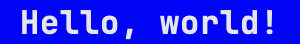
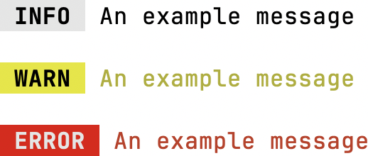

library
NeonSign
NeonSign is a Python library for making styled text in terminals. The library offers a modern, declarative syntax. You can simply describe the styles and effects your text should have, without having to work with terminal commands directly.
Gallery
Styling a string
|  |  |
Styling a text block
You can use NeonSign to make command line prompts more readable:
Or, to print a neatly formatted list:
You can surround text blocks using a variety of frame styles available in NeonSign:
Creating a text-based UI
This is an experimental feature currently being prototyped:
Topics
Getting started
Learn to use NeonSign’s declarative syntax to build styled text.
Browse the examples that demonstrate the capabilities of NeonSign’s APIs.
Styling a string
function |
Wraps the specified contents so that styles can be added to them. |
class |
A class that represents a string with visual styles. |
class |
A class that represents a color. |